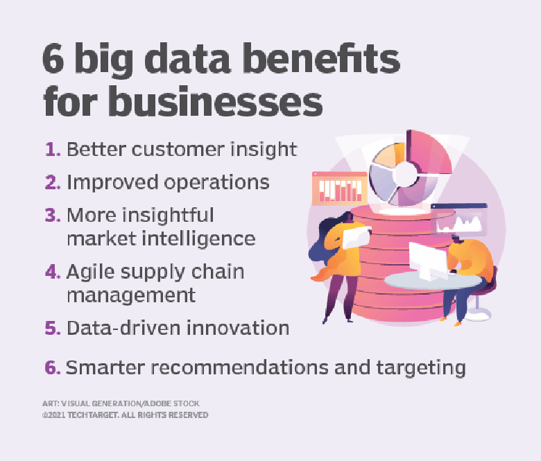

Importance of big data
Companies use big data in their systems to improve operations, provide better customer service,
create personalized marketing campaigns and take other actions that, ultimately, can increase
revenue and profits. Businesses that use it effectively hold a potential competitive advantage
over those that don't because they're able to make faster and more informed business decisions.
For example, big data provides valuable insights into customers that companies can use to refine
their marketing, advertising and promotions in order to increase customer engagement and conversion
rates. Both historical and real-time data can be analyzed to assess the evolving preferences of consumers
orporate buyers, enabling businesses to become more responsive to customer wants and needs.
Big data is also used by medical researchers to identify disease signs and risk factors and by doctors to help
diagnose illnesses and medical conditions in patients. In addition, a combination of data from electronic health
records, social media sites, the web and other sources gives healthcare organizationsand government agencies
up-to-date information on infectious disease threats or outbreaks.Here are some more examples of how big data
is used by organizations:In the energy industry, big data helps oil and gas companies identify potential drilling
locations and monitor pipeline operations; likewise, utilities use it to track electrical grids.Financial services
firms use big data systems for risk management and real-time analysis of market data.Manufacturers and transportation
companies rely on big data to manage their supply chains and optimize delivery routes. Other government uses include
emergency response, crime prevention and smart city for more infromation click hereاضغط هنا
